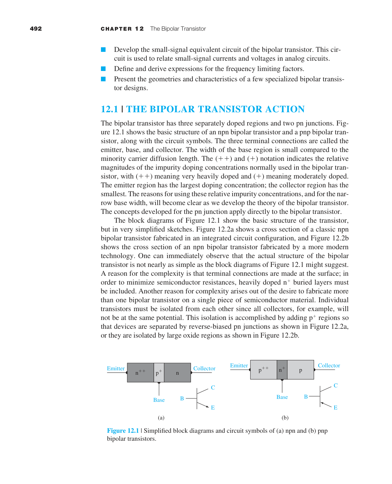
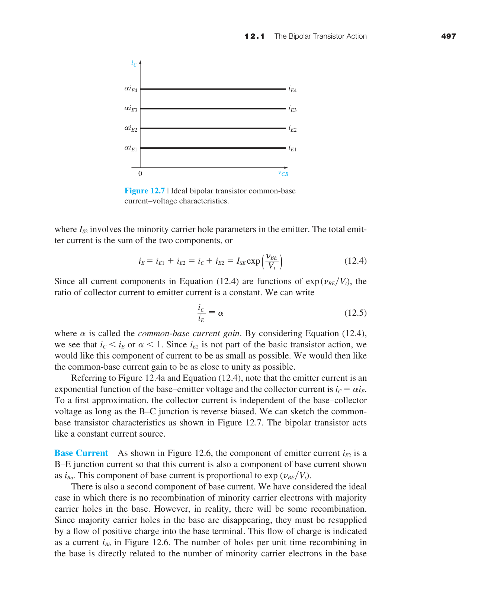

JFET / MESFET / HEMT
這章真正要你理解的不是多一種 transistor 名稱，而是 場效控制還有另一條路。MOSFET 靠反轉層建立通道；JFET / MESFET 則假設通道本來就存在，再用耗盡區把它慢慢掐小。
所以本章吃的是第 5 章輸運、第 7 章接面靜電學、第 9 章 Schottky barrier 的物理。你若不懂耗盡區怎麼長、通道截面怎麼影響電導，這章就只剩曲線背誦。
回總地圖
13.1 JFET 與 MESFET 的共通骨架
JFET 用 pn 接面反偏造成的耗盡區控制通道；MESFET 用 Schottky gate 的勢壘區控制通道。兩者都屬於 depletion-mode field effect：gate 的功能是縮小原本存在的通道，而不是像 enhancement MOSFET 那樣先創造通道。
| 元件 | gate 機制 | 通道來源 | 典型優勢 |
|---|---|---|---|
| JFET | pn 接面反偏 | 預先摻雜好的導電通道 | 模型乾淨、低雜訊 |
| MESFET | 金屬-半導體勢壘 | 預先存在的高遷移率通道 | 適合 III-V 高頻元件 |
| MOSFET | MOS 電容與反轉層 | 由 gate 建立通道 | 超大規模整合 |
13.2 pinch-off、飽和與 transconductance
隨著 $V_{GS}$ 變得更負，耗盡區向通道中央擴張，通道有效寬度下降，直到發生 pinch-off。這個事件不是通道完全沒電流，而是通道在 drain 端附近被夾窄到電流進入飽和控制。
這是 depletion-mode JFET 最該記住的式子。它的物理口語版是：你不是打開電流，而是在收窄通道。

MESFET 的 I-V 架構和 JFET 類似，但 gate 是 Schottky barrier，所以常出現在 GaAs 一類高遷移率材料上，特別適合高頻。
13.3–13.4 非理想、小訊號與高頻
理想飽和區不會永遠平坦。通道長度調變會讓 $I_D$ 隨 $V_{DS}$ 再上升；高場下還會碰到速度飽和。這表示 JFET / MESFET 也得像 MOSFET 一樣進入真實元件修正。
一旦你有了 $g_m$、$r_d$ 和寄生電容，這顆元件就能被畫成小訊號等效電路，進入放大器與高頻設計。
13.5 HEMT：為什麼異質接面可以更快
HEMT 把材料工程直接拉進元件設計。它不是單純把 MESFET 再縮小，而是用異質接面把電子困在高遷移率、低散射的二維電子氣通道裡。
這代表兩件事。第一，載子可以和摻雜離子空間分離，雜質散射更低。第二，通道不只由幾何尺寸決定，還由能帶對準方式決定。
本章總結
- JFET / MESFET 是 depletion-mode 場效元件，gate 的工作是掐窄通道。
- pinch-off 是本章核心事件，對應電流進入飽和控制。
- 小訊號模型與頻率限制把這章從 DC 曲線推進到 RF 與放大器應用。
- HEMT 代表材料與能帶工程直接介入高頻元件性能。